SVG動態圖檔產生以及使用
本篇以svg動態圖檔的產生以及使用來提供操作步驟，過程會是從Photoshop & Illustrator製作畫面，將要作為動態的圖層們轉為靜態的svg / gif / png...，
再將不論是不做動態的圖以及要做動態的圖都放進svgator裡面做處理，做完後再經由上傳後台或者組合html的方式，繼而完成svg動態的使用。
svg圖檔格式是具有檔案大小比apng小，又不會產生像gif那樣的鋸齒狀、白邊、品質降低的一個好選擇，具有向量圖的特性，放大縮小都不會失真。
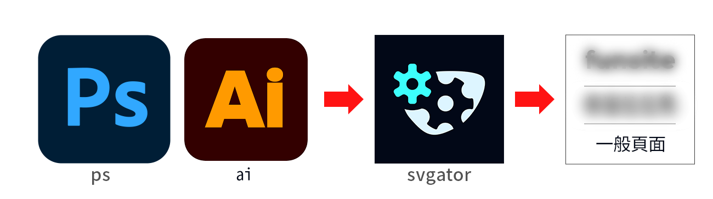
*沒有研究svgator很久，若有更好的方式，歡迎交流。
*觀看對象以視覺設計師為主。
Photoshop的部分
本篇是以觀看者為art的角度切入，所以在ps上的描述，會因為art平時頻繁接觸這個軟體，而說明的比較少，在svagtor的說明較多喔！
以2025年產出的某活動頁視覺來說，在ps上先將靜態的底圖輸出成png(若要是其他圖片格式都可以，svgator大部分的靜態圖片格式都可以接受)，再將要處理成動態的圖層(或圖層們)輸出成png。
Illustrator的部分
若是在Illustrator產出svg的話，在轉存時它已經有svg的格式可以選擇。
以及在圖層上可以分好要動的每一個部分，如下圖所示，要動的是一個人頭，
可以把他的頭髮、嘴巴..都拆開，再放進去svagator時它也會產生相對應的圖層，這樣在編輯動態時就更靈活了。
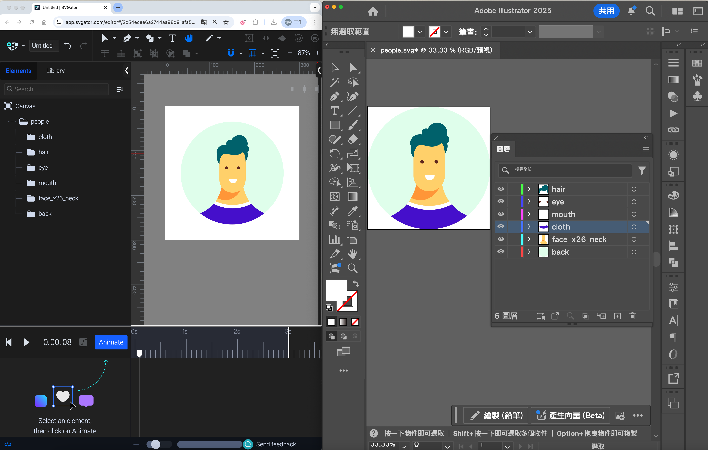
（左邊面板是svgator，右邊是ai，ai的圖層分好可以完整展現在svgator的分層中。）
但是需要注意，在Illustrator轉存檔案格式為svg時，轉存選項中，若是選擇影像位置為“連結”的話，svg檔案會沒有被完整的存下來，導致如下圖那樣，
有個不知名的圖片夾在影像中，選擇“嵌入”或者“保留”可以解決這種情況。
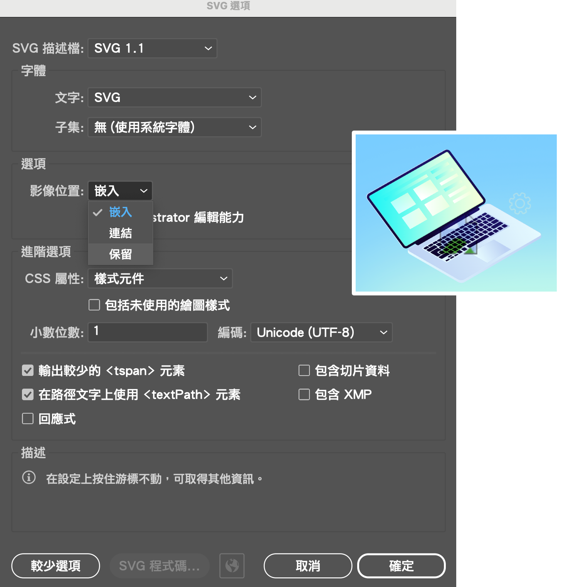
Svgator的部分
PS以及Illustrator的部分完成後，接著就可以將從PS跟Illustrator轉出的靜態圖片上傳到svgator裡，
要開始使用svgator，先註冊登入，它有免費跟付費的使用方案，免費的話有以下限制：(官網資料)
一個月可以輸出 5 次動畫
時間軸不能超過 10 秒
基礎動畫效果
若已經登入進來svgator的介面中了，點擊藍色的按鈕"+ New project"，在跳出的彈跳窗裡面選擇右側，畫布尺寸可以再調整，不需要一開始就設定好，當然一開始設定好也很棒。
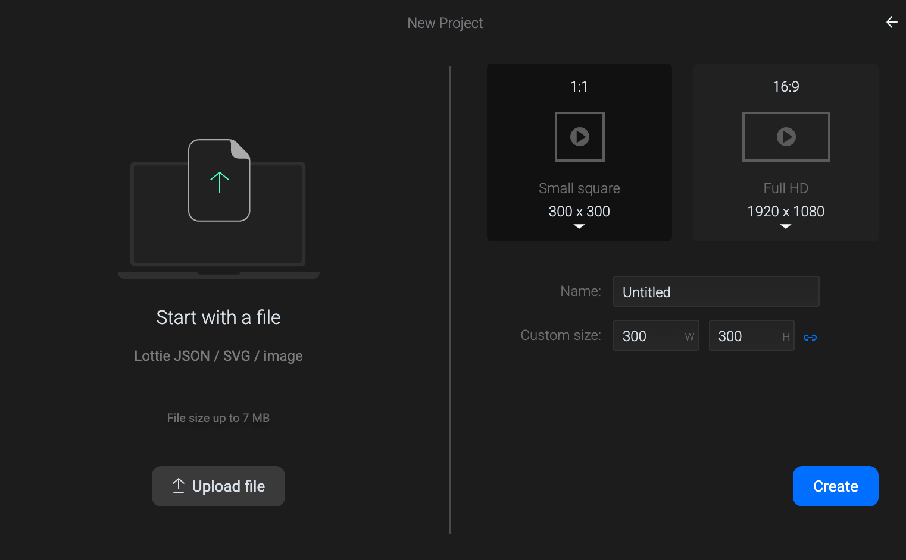
接著就會進入操作介面如下圖，1.選擇左側欄位的library，並且2.上傳要製作svg的圖進來。
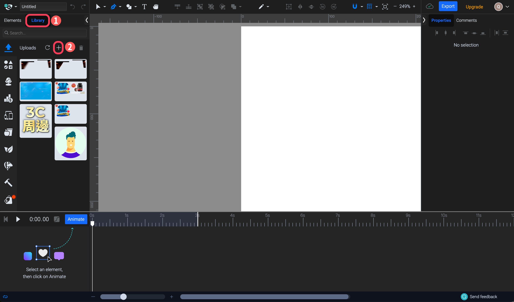
接著
1.選擇左側選單的elements
2.然後點擊要動的那張png
3.接著點擊左下方的“animate”
4.點它之後會冒出基礎動作，大家可以都玩玩看。其中skew是指傾斜。選擇其中一個（可以複選）後，會先自動產生第一個關鍵影格
5.拉扯播放頭（官網是描述“playhead”）到後面的秒數，再按"+"
6.會再產生新的關鍵影格，動作基本上就設定好了，按快捷鍵space可以讓它跑跑看
7.那條白線是指當前檔案要進行的秒數，預設是第3秒
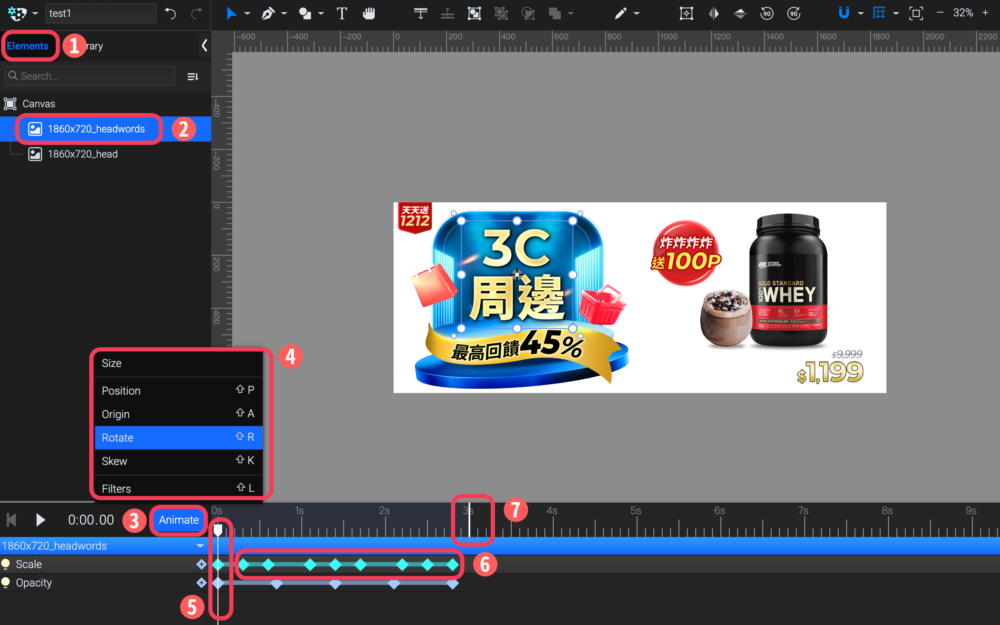
看完並且了解這段後，基本上已經擁有透過svgator輸出svg的方法了
1.點擊右上角的"Export"
2.會跳出許多檔案格式的選項，請選擇svg，然後會出現下圖的畫面
3.請選擇CSS only，如果選預設的JavaScript會無法上傳後台，後台不吃由JavaScript控制的svg
4.選擇下圖中有框起來的編號3"infinite"，意思是說永遠循環，選擇infinite是站在分會場的動態大部分都是無限循環，如果有其他作業考量，不用選永遠循環也不會造成輸出上的錯誤
5.請選擇"fixed size"而不是選擇該欄位中的"responsive"，因為會造成在後台上傳時的錯誤
6.點擊“export”就輸出了
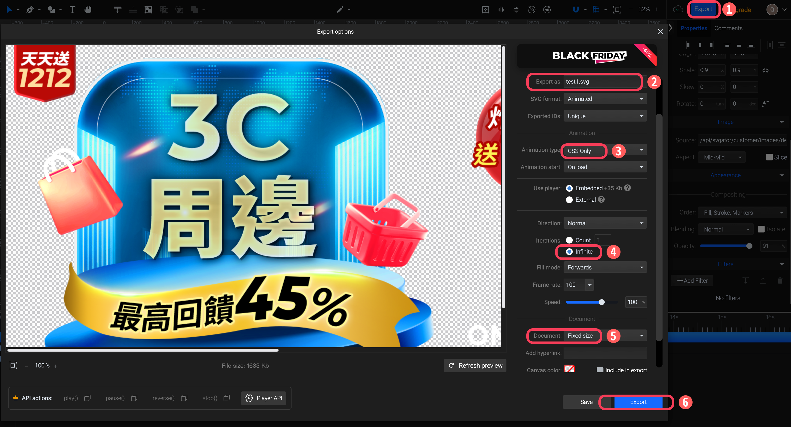
（產出結果。）
熟悉基本動態功能後，就可以好好使用這些功能做動態啦～
*目前實測結果為，手機版背景無法在iphone & android展示出動態。
上傳&組版的部分
再來是最後的上傳動作或者組合html，上傳後台拉拉熊，如果有依照以上的說明，應是可以正常上傳的。在組合html的部分也是。其中只要注意，要是輸出類型是java的話，
一般頁面要寫入時，要使用<object>，不吃<img>。而
以上若是都操作順利的話，恭喜，已經完成整套流程了！
指定單一svg檔案再使用的便利以及限制（免費版）
在svgator製作的檔案，每個圖層(官網是描述“element”)的影格，可以複製到另外一個svg檔案去，如size、position、origin、scale、rotate、skew、opacity..
以活動頁換檔來說，一個分會場公版的主標區塊1860x720會有2-3次換口號的情況發生，而每次分會場的製作者未必是同一個人，在svgator製作完的的svg，下載後，再丟回svgator，它原先的動態設定會消失，成為靜態圖，
若是付費版的Team方案有共同編輯的功能，因為尚未操作到Team版，所以不曉得實際情況是如何。
那在免費版的情況下要怎麼實現不同art要在同一個svg換2-3次口號然後動態又一致？這部分有待討論。
出圖動畫類型CSS & Java的差異
後台上傳的svg圖不接受由Java產出的svg，一般頁面可以，
但若是由Java產出的話，html描述方式不接受用<img>標籤，要使用<object>。
兩者（CSS & Java）輸出類型的差異比較，源自官網。
以下展示背景漸層過渡的效果，從晚上的深色到白天的淺色，在CSS ＆ Java上的差別。
（使用CSS，顏色變化沒那麼平滑。10秒為一個循環重複播放。）
（使用Java，顏色變化平滑順暢。10秒為一個循環重複播放。）
Tips 小訣竅
有幾次在匯入圖片時會顯示錯誤，出現以下的錯誤訊息，如果檔名是帶有中文的，改為全英數就可以了。
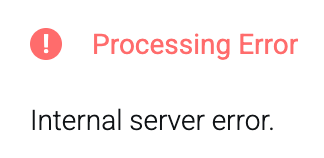
會有檔案壞掉的情況，設定好了關鍵影格卻無法播放，刪除掉該檔重新建立就好了。
更多應用 : Svgator的遮罩效果
相較於PS的圖層遮色片以及剪裁遮色片的使用，svgator的遮罩效果跟Illustrator的遮色片操作方式更類似。將上層群組以及下層群組選取後按右鍵，選擇"create mask"，即能表現出效果。
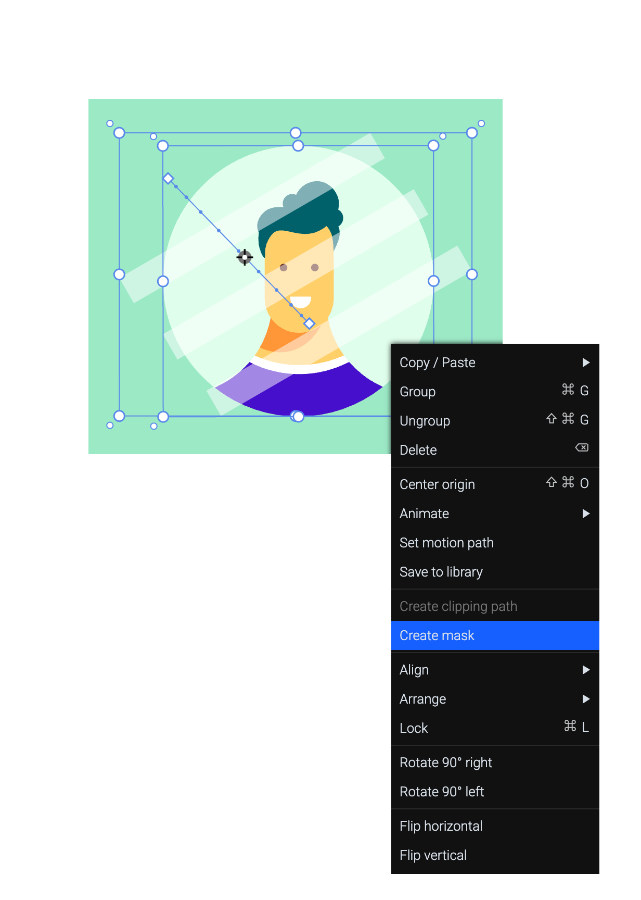
使用ease in out可以讓動態更順暢，更古溜。
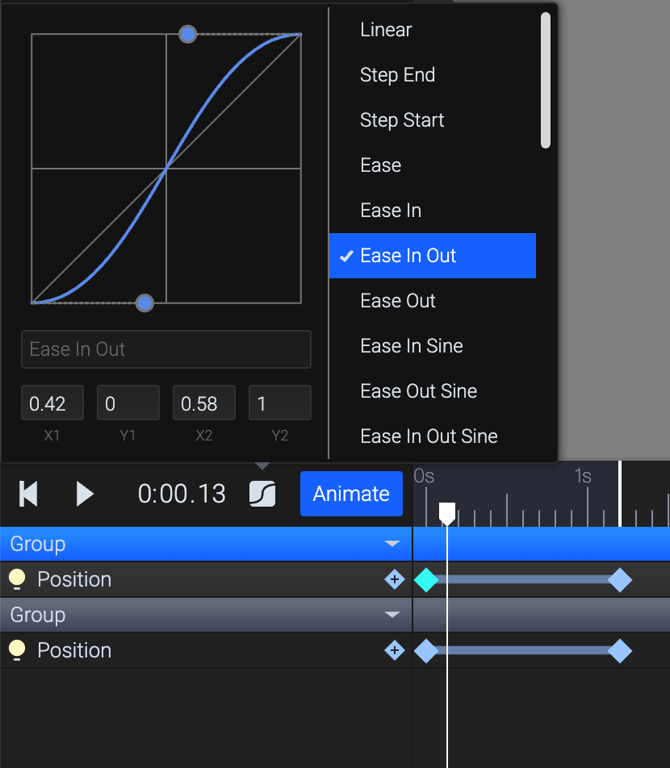
更多應用 : Svgator的Motion Path
Motion Path的使用可以製作物件移動的效果，詳細的步驟說明可以看這個影片：
若是原始圖檔是向量檔，先在Illustrator完成檔案的圖層分層，接著匯入到Svator，以下圖來說，蝙蝠是要做為路徑移動的圖，而boxman是靜態不動的。用鋼筆工具繪製一段路徑。
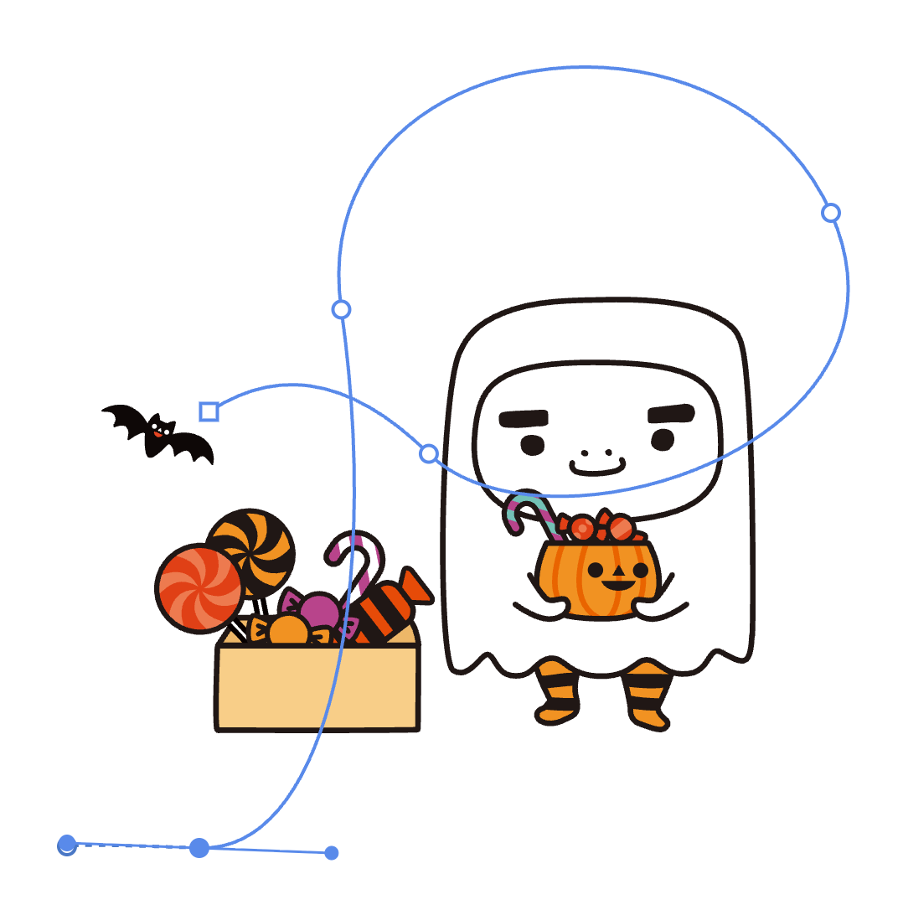
接著點擊1.蝙蝠，選擇2.set motion path，接著再點擊那一段路徑。
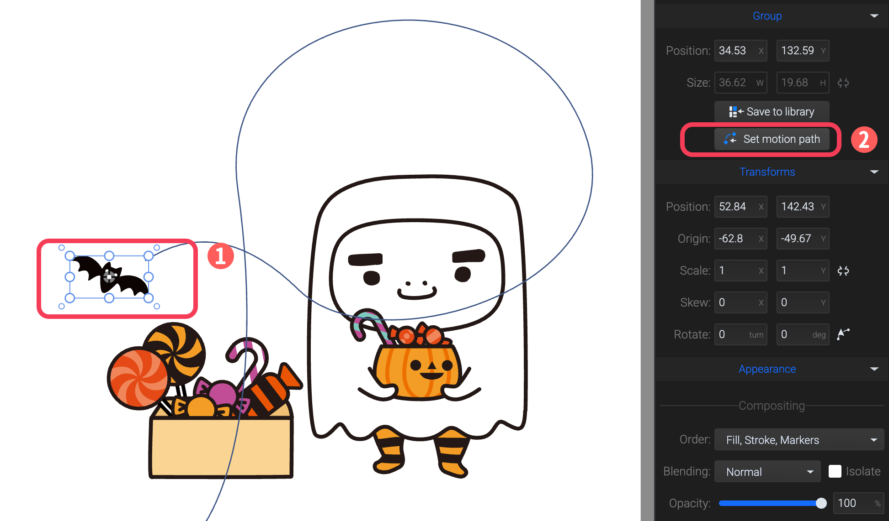
如果出現下圖的彈跳窗，有藍色的按鈕"Done"的話，點下去，表示成功了。
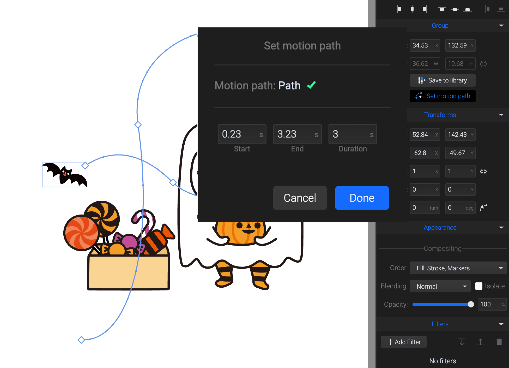
點擊下圖中的紅框處，就完成了。
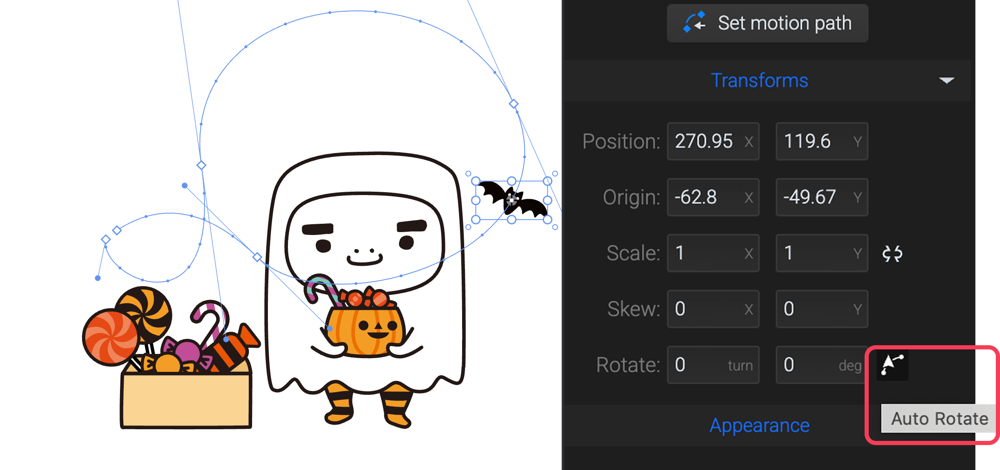
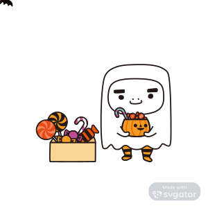
熟悉更多動態功能後，就可以好好使用這些功能做動態啦～